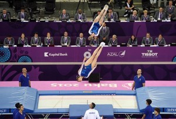

trampoline
Page sur le trampoline.
les figures:
Sur le trampoline on peu faire des figures comme:
- une vrille, c'est faire un tour sur soi-meme.
- un salto avant, c'est faire une roulade dans les aires sans posée les mains et atérir sur les pieds.
- le saut groupé, c'est sauté et ratrappé ses genoux.
- le saut écart, c'est sauté et faire un grand écart en l'air...
